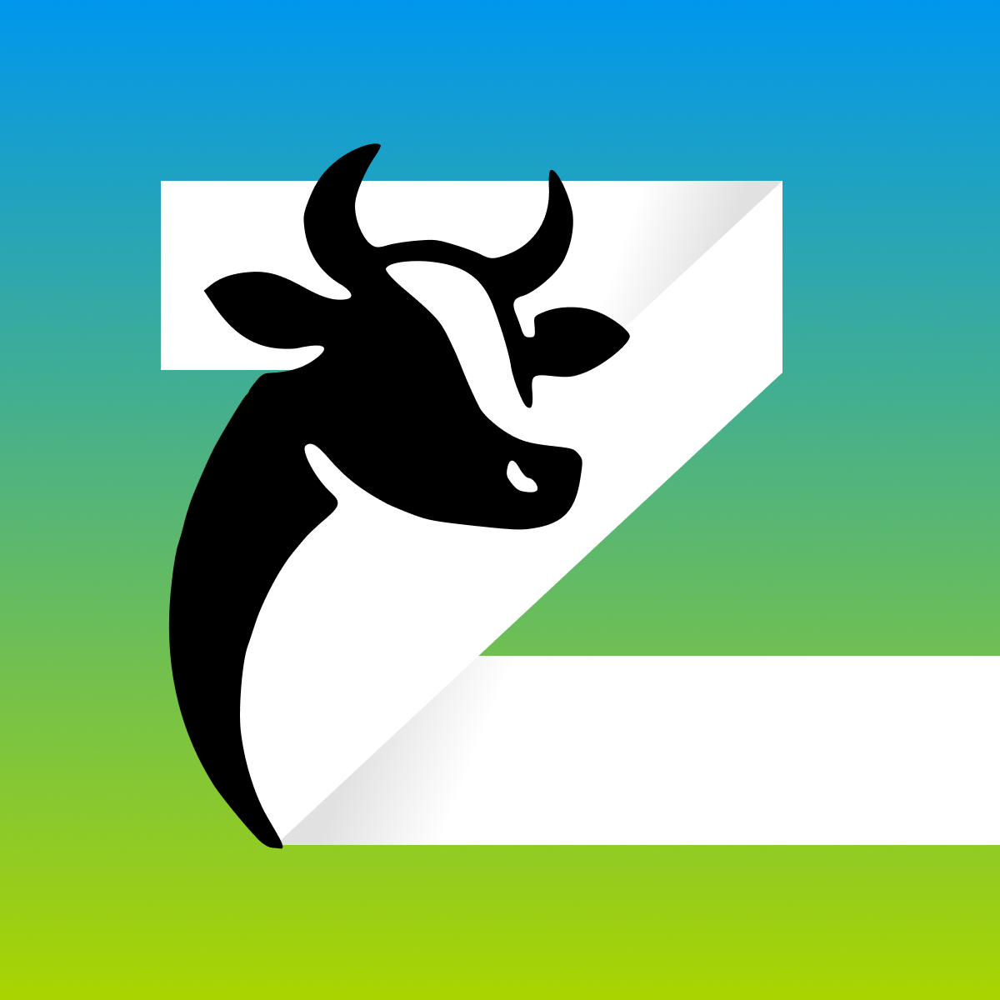

| Login multi-utente | Accesso sicuro per più operatori con ruoli e permessi personalizzati. |
| Anagrafiche clienti | Gestione completa dei dati degli allevatori e delle aziende agricole. |
| Anagrafiche animali | Schede dettagliate per ogni animale con storico e caratteristiche. |
| Visite | Registrazione delle visite effettuate con dettagli su interventi e osservazioni. |
| Annotazioni | Note e appunti personalizzati per ogni cliente, animale o visita. |
| Calendario appuntamenti | Pianificazione e promemoria per le visite programmate. |
| Gestione patologie e terapie | Monitoraggio delle patologie riscontrate e delle terapie somministrate. |
| Report stampabili | Generazione di report dettagliati da stampare o esportare in PDF. |